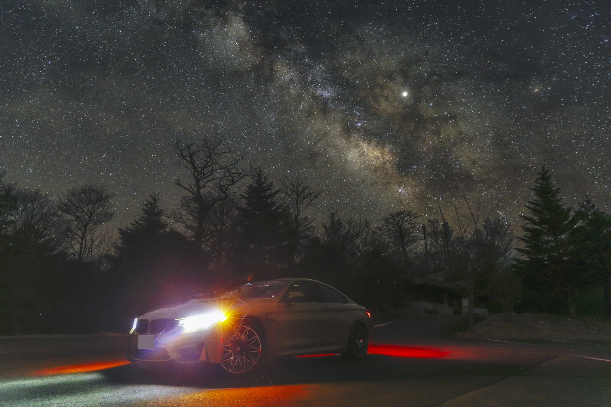
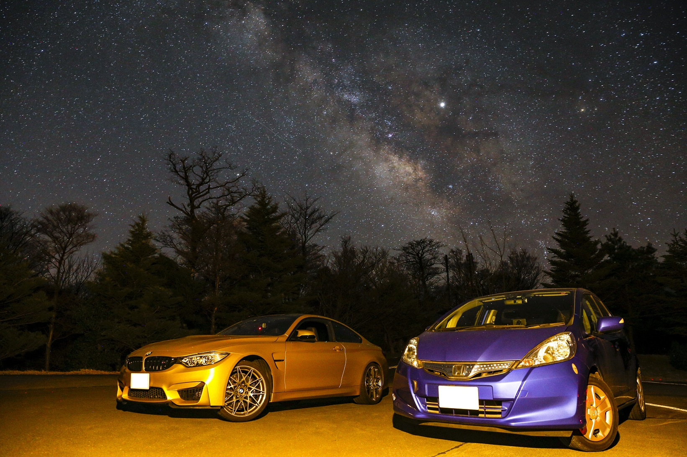
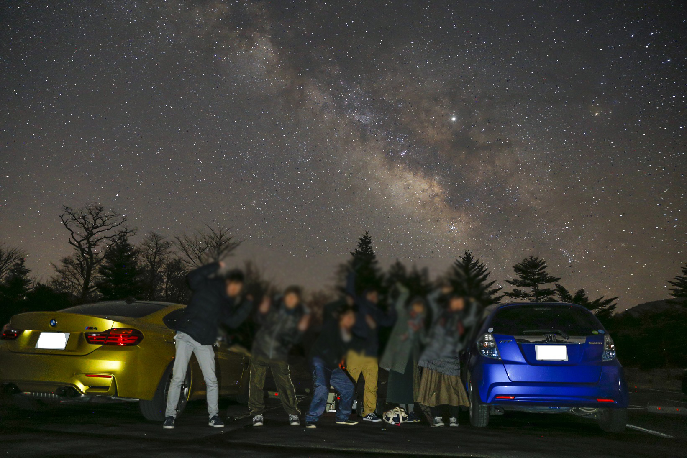
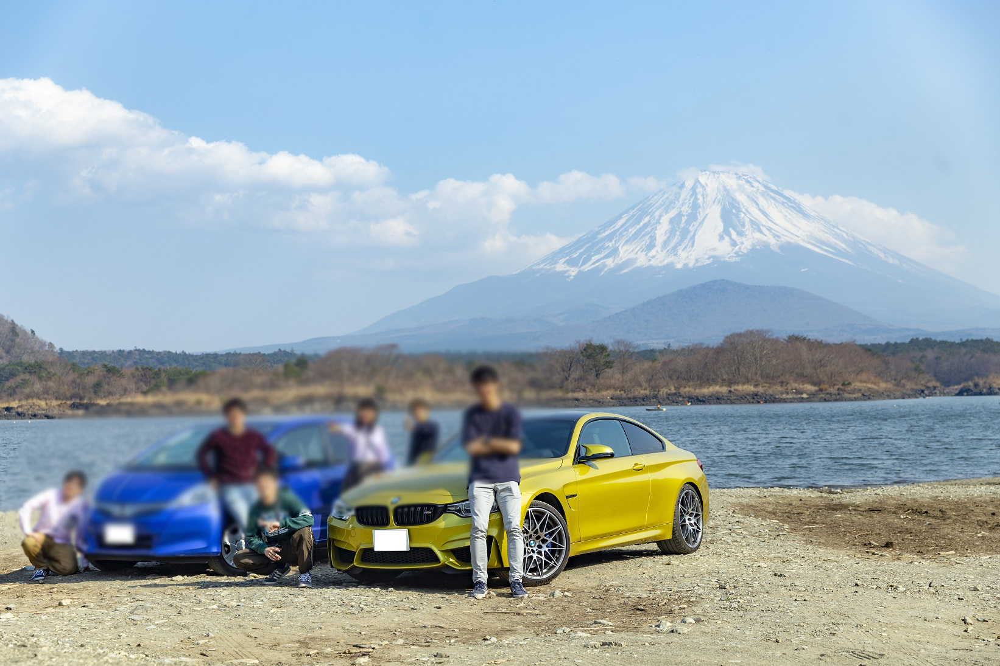
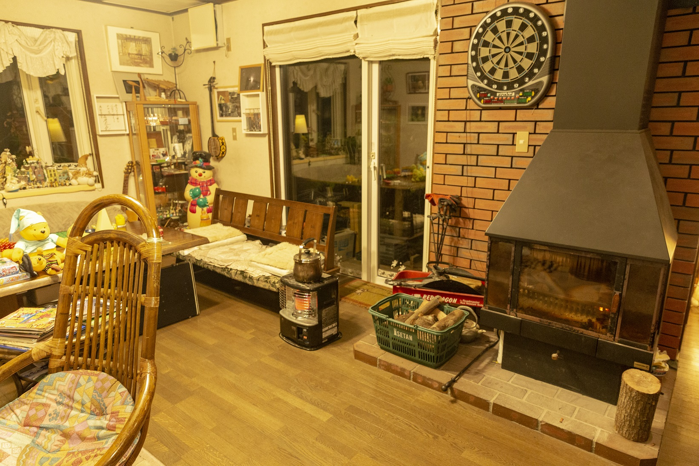
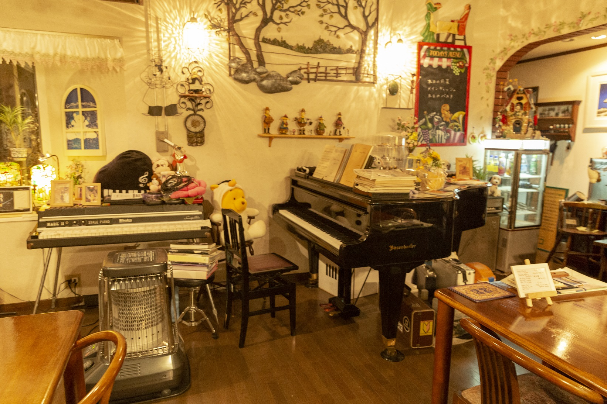
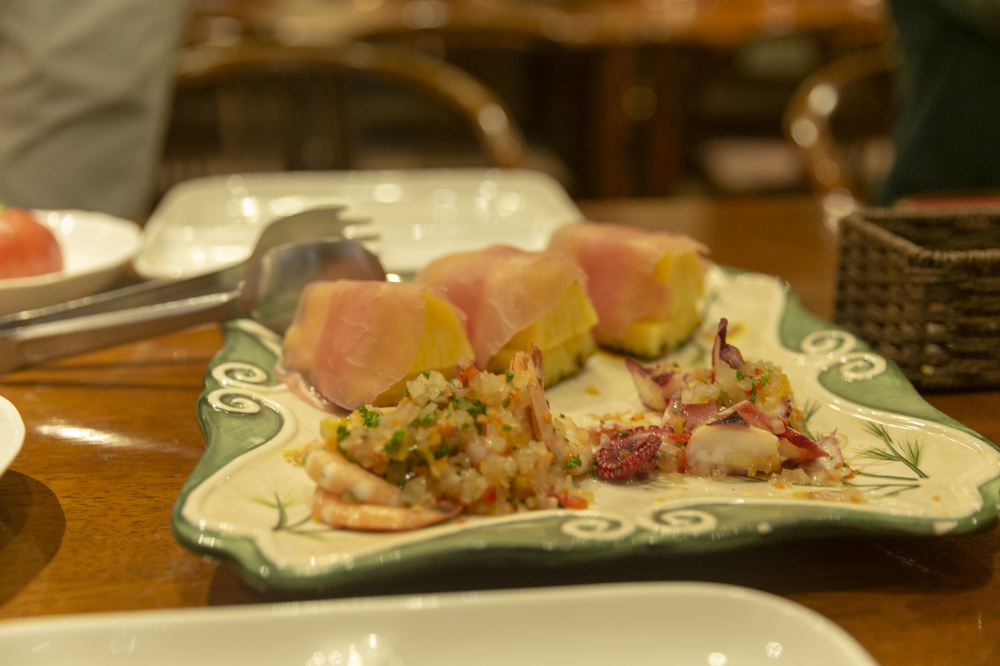
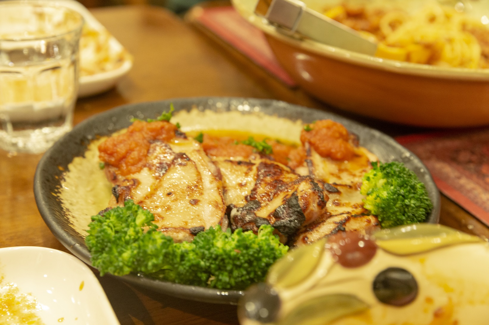
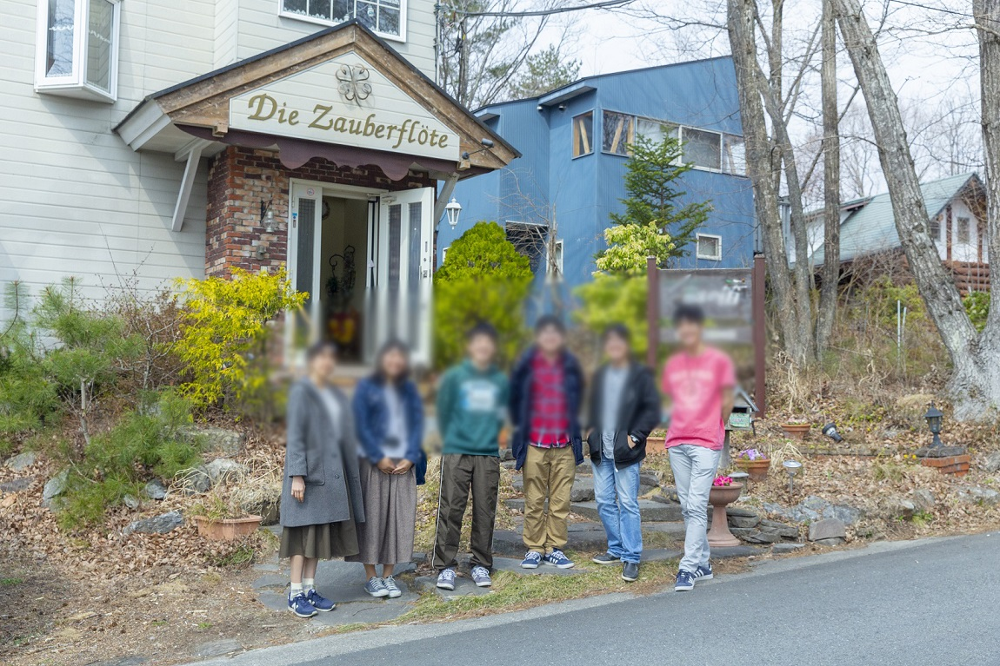

<!DOCTYPE html>
<html>

<head><meta name="generator" content="Hexo 3.8.0">
  <meta charset="utf-8">
  
  <title>【遠征記】2019年4月 天城高原 | ほしよみ大学生のブログ</title>
  <meta name="viewport" content="width=device-width">
  <meta name="description" content="あいさつこんにちは．もう7月になってしまいますが，4月の遠征記事を書いておこうと思います．4月は2回ほど天城高原に訪れていましたが，しっかり一晩晴れたのは前半の4月5日-7日での遠征でしたので，その時の話です．">
<meta name="keywords" content="写真,天体写真,遠征記">
<meta property="og:type" content="article">
<meta property="og:title" content="【遠征記】2019年4月 天城高原">
<meta property="og:url" content="http://dabokun.github.io/2019/07/10/00000015-2019-04-amagi/index.html">
<meta property="og:site_name" content="ほしよみ大学生のブログ">
<meta property="og:description" content="あいさつこんにちは．もう7月になってしまいますが，4月の遠征記事を書いておこうと思います．4月は2回ほど天城高原に訪れていましたが，しっかり一晩晴れたのは前半の4月5日-7日での遠征でしたので，その時の話です．">
<meta property="og:locale" content="ja">
<meta property="og:image" content="http://dabokun.github.io/2019/07/10/00000015-2019-04-amagi/card.jpg">
<meta property="og:updated_time" content="2019-07-11T04:03:23.290Z">
<meta name="twitter:card" content="summary">
<meta name="twitter:title" content="【遠征記】2019年4月 天城高原">
<meta name="twitter:description" content="あいさつこんにちは．もう7月になってしまいますが，4月の遠征記事を書いておこうと思います．4月は2回ほど天城高原に訪れていましたが，しっかり一晩晴れたのは前半の4月5日-7日での遠征でしたので，その時の話です．">
<meta name="twitter:image" content="http://dabokun.github.io/2019/07/10/00000015-2019-04-amagi/card.jpg">
<meta name="twitter:creator" content="@dabo_pic">
  <meta property="og:image" content="https://dabokun.github.io/images/favicon.png">
  
  <link rel="alternative" href="/atom.xml" title="ほしよみ大学生のブログ" type="application/atom+xml">
  
  
  <link rel="icon" href="/images/favicon.png">
  
  <link rel="stylesheet" href="/css/style.css">
  <!--[if lt IE 9]><script src="//html5shiv.googlecode.com/svn/trunk/html5.js"></script><![endif]-->
  
</head></html>
<body>
  <div id="container">
    <div class="mobile-nav-panel">
	<i class="icon-reorder icon-large"></i>
</div>
<header id="header">
	<h1 class="blog-title">
		<a href="/">ほしよみ大学生のブログ</a>
	</h1>
	<nav class="nav">
		<ul>
			<li><a href="/">Home</a></li><li><a href="/categories">Categories</a></li><li><a href="/tags">Tags</a></li><li><a href="/archives">Archives</a></li><li><a href="/about">About</a></li><li><a href="/work">Work</a></li>
			<li><a id="nav-search-btn" class="nav-icon" title="Search"></a></li>
			<li><a href="https://github.com/dabokun"></a>
			</li>
			<li><a href="https://twitter.com/dabo_pic"></a></li>
			<li><a href="/atom.xml" id="nav-rss-link" class="nav-icon" title="RSS Feed"></a>
			</li>
		</ul>
	</nav>
	<div id="search-form-wrap">
		<form action="//google.com/search" method="get" accept-charset="UTF-8" class="search-form"><input type="search" name="q" class="search-form-input" placeholder="Search"><button type="submit" class="search-form-submit">&#xF002;</button><input type="hidden" name="sitesearch" value="http://dabokun.github.io"></form>
	</div>
</header>
    <div id="main">
      <article id="post-00000015-2019-04-amagi" class="post">
	<footer class="entry-meta-header">
		<span class="meta-elements date">
			<a href="/2019/07/10/00000015-2019-04-amagi/" class="article-date">
  <time datetime="2019-07-10T02:37:29.000Z" itemprop="datePublished">2019-07-10</time>
</a>
		</span>
		<span class="meta-elements author">astr0dab0</span>
		<div class="commentscount">
			
			<a href="http://dabokun.github.io/2019/07/10/00000015-2019-04-amagi/#disqus_thread" class="article-comment-link">Comments</a>
			
		</div>
	</footer>
	
	<header class="entry-header">
		
  
    <h1 class="article-title entry-title" itemprop="name">
      【遠征記】2019年4月 天城高原
    </h1>
  

	</header>
	<div class="entry-content">
		
		
		<div id="toc" class="toc-article">
			<p class="toc-title">目次</p>
			<ol class="toc"><li class="toc-item toc-level-3"><a class="toc-link" href="#あいさつ"><span class="toc-number">1.</span> <span class="toc-text">あいさつ</span></a></li><li class="toc-item toc-level-3"><a class="toc-link" href="#天城高原"><span class="toc-number">2.</span> <span class="toc-text">天城高原</span></a></li><li class="toc-item toc-level-3"><a class="toc-link" href="#本栖湖，精進湖"><span class="toc-number">3.</span> <span class="toc-text">本栖湖，精進湖</span></a></li><li class="toc-item toc-level-3"><a class="toc-link" href="#魔法の笛"><span class="toc-number">4.</span> <span class="toc-text">魔法の笛</span></a></li></ol>
		</div>
		
		<h3 id="あいさつ"><a href="#あいさつ" class="headerlink" title="あいさつ"></a>あいさつ</h3><p>こんにちは．もう7月になってしまいますが，4月の遠征記事を書いておこうと思います．4月は2回ほど天城高原に訪れていましたが，しっかり一晩晴れたのは前半の4月5日-7日での遠征でしたので，その時の話です．</p>
<a id="more"></a>
<h3 id="天城高原"><a href="#天城高原" class="headerlink" title="天城高原"></a>天城高原</h3><p>実は今回の遠征の主目的は星見ではなく，小淵沢の「<a href="http://mahounofue.com/" target="_blank" rel="noopener">魔法の笛</a>」さんという宿に泊まることだったのですが，同期と星を見たい気持ちもあったので，その前日の夜に，唯一晴れそうな天城に向かうことにしました．自分と同期たち6人で今回の旅行をする予定で，車を運転するのは自分ともうひとり．その彼が夜まで大学で用事があったので，夜21時頃に家を出発し，最寄り駅で車を運転しない同期を2人拾って，西湘バイパスを走ってのんびり天城に向かいました．<br>麓のコンビニで彼の車と合流．彼は大変車が好きで，BMW M4 Competitionというスポーツクーペに乗っています（どれだけすごい車かは調べてもらえばわかると思いますが，にしても本当に大学生か？）．自分も二回ほどドライブで乗せてもらったことがありますが，めちゃくちゃ速いです．<br>道中鹿の犠牲になるなら自分の車の方がいいだろうということで，自分が先導してのんびり山登りしました．案の定道中かなりの数の鹿と出くわすことになり，その度ハザードで警告したので事故らずに済みました．<br>到着してみると，予報通り風がひどい時の天城で，体が吹き飛ばされそうでした．それでもよく晴れていたので，なんとか機材を展開し，同期のうち何人かはミラーレスを持っていたので，彼らに赤道儀を使わせてあげました．彼らにとって長時間露光でもしっかり点に写るというのは初めてらしく，とても感動していたので良かったです．<br>金曜の夜ということで人もあまりいなかったので，少し車を動かして何枚か撮影．<br></p>
<p><div style="text-align: center;"><br>”M upon the earth”<br>2019年4月6日 午前3時46分 静岡県天城高原にて<br>EF24-70mm F2.8L II USM (24mm F4)<br>Canon EOS 6D<br>ISO 3200 / 25s<br>Adobe Lightroom CC / Photoshop CC<br></div><br><br><br>タイトルは「地上に降り立ったM」のような意味です．BMW MシリーズのMと，MessierのMをかけています（事実，空にはもう1つのM4が写っているのが天文マニアの方であればすぐわかるでしょう）．</p>
<p></p>
<p><div style="text-align: center; padding-top:-90px"><br>2台で撮影．ライトはVixenの減光ライトの白色光を使用しました．なかなかいい感じですね．<br></div><br><br></p>
<p></p>
<p><div style="text-align: center; padding-top:-90px"><br>天の川を支えるポーズ．25秒露光ですが，この体勢を25秒間キープするのは至難の業です．まだまだ修行が足りない．<br></div><br><br></p>
<h3 id="本栖湖，精進湖"><a href="#本栖湖，精進湖" class="headerlink" title="本栖湖，精進湖"></a>本栖湖，精進湖</h3><p>明け方前の4時頃に天城高原を出発しました．冷川インターで降りて朝からやっている温泉に浸かり，ブランチ？にさわやかを食べ，新東名を経由して朝霧方面から本栖湖と精進湖へ．少し雲もありましたが晴れていて富士山もよく見える．</p>
<p></p>
<p><div style="text-align: center;"><br>精進湖にて<br></div><br><br><br>星見のときもそうですが，精進湖は湖畔に降りられるのがいいですね．路面が厳しいので同期の車はかなりビビりながら侵入してましたが笑．</p>
<h3 id="魔法の笛"><a href="#魔法の笛" class="headerlink" title="魔法の笛"></a>魔法の笛</h3><p>それからは3月のライブの時と同じルートで魔法の笛さんに直行．同期の車が速すぎて高速道路で置いてきぼりにされたりなどしましたが無事到着．移動の疲れ（主に車を運転していた2人は死にそうでした）を，ゆっくり羽を伸ばして癒やしました．</p>
<p></p>
<p></p>
<p><div style="text-align: center;"><br>内装はこんな感じで，とてもおしゃれ．暖炉やグランドピアノがあったりボードゲームができたりします．<br></div><br><br><br>実はこの宿は自分が学部1年生にも宿泊したことがあり，料理がめちゃくちゃ美味しくて忘れられなかったので，同期との旅行という適当な口実をつけて来たかった宿になります笑．同期も料理にとても満足していたので結果オーライといったところでしょうか．</p>
<p></p>
<p></p>
<p><div style="text-align: center;"><br>料理はイタリアンです．やっぱりめちゃくちゃ美味しい！<br></div><br><br><br>オーナーさんも気さくなとても良い方で，週末にしか営業していないのがもったいないくらい素敵な宿です．また何か理由をつけて行きたいと思います．</p>
<p></p>
<p><div style="text-align: center;"><br>宿の玄関前で撮ってもらいました，ありがとうございました！<br></div><br><br><br>その後は渋滞も嫌だったので，そのまま帰りました．<br>夏はこのメンツでコテージに泊まりに行く（予定）なのでとても楽しみですね．</p>

		
	</div>
	<footer class="article-footer">
		<a href="https://twitter.com/intent/tweet?text=%E3%80%90%E9%81%A0%E5%BE%81%E8%A8%98%E3%80%912019%E5%B9%B44%E6%9C%88%20%E5%A4%A9%E5%9F%8E%E9%AB%98%E5%8E%9F｜%E3%81%BB%E3%81%97%E3%82%88%E3%81%BF%E5%A4%A7%E5%AD%A6%E7%94%9F%E3%81%AE%E3%83%96%E3%83%AD%E3%82%B0&url=http://dabokun.github.io/2019/07/10/00000015-2019-04-amagi/" class="twitter-share-button" target="_blank" title="Twitter"></a>
		<script async src="https://platform.twitter.com/widgets.js" charset="utf-8"></script>
	</footer>
	<footer class="entry-footer">
		<div class="entry-meta-footer">
			<span class="category">
				
  <div class="article-category">
    <a class="article-category-link" href="/categories/expedition/">遠征記</a>
  </div>

			</span>
			<span class=" tags">
				
  <ul class="article-tag-list"><li class="article-tag-list-item"><a class="article-tag-list-link" href="/tags/photography/">写真</a></li><li class="article-tag-list-item"><a class="article-tag-list-link" href="/tags/astrophotography/">天体写真</a></li><li class="article-tag-list-item"><a class="article-tag-list-link" href="/tags/expedition/">遠征記</a></li></ul>

			</span>
		</div>
	</footer>
	
	
<nav id="article-nav">
  
    <a href="/2019/07/10/00000016-santai-impression/" id="article-nav-newer" class="article-nav-link-wrap">
      <strong class="article-nav-caption">Newer</strong>
      <div class="article-nav-title">
        
          中国SF「三体」がめちゃくちゃ面白かった話
        
      </div>
    </a>
  
  
    <a href="/2019/06/23/00000014-abc-131/" id="article-nav-older" class="article-nav-link-wrap">
      <strong class="article-nav-caption">Older</strong>
      <div class="article-nav-title">
        
          ABC 131 (Fまで)
        
      </div>
    </a>
  
</nav>

	
</article>


<section id="comments">
	<div id="disqus_thread">
		<noscript>Please enable JavaScript to view the <a href="//disqus.com/?ref_noscript">comments powered by
				Disqus.</a></noscript>
	</div>
</section>

    </div>
    <div class="mb-search">
  <form action="//google.com/search" method="get" accept-charset="utf-8">
    <input type="search" name="q" results="0" placeholder="Search">
    <input type="hidden" name="q" value="site:dabokun.github.io">
  </form>
</div>
<footer id="footer">
	<h1 class="footer-blog-title">
		<a href="/">ほしよみ大学生のブログ</a>
	</h1>
	<span class="copyright">
		&copy; 2019 astr0dab0<br>
		Modify from <a href="http://sanographix.github.io/tumblr/apollo/" target="_blank">Apollo</a> theme, designed by <a href="http://www.sanographix.net/" target="_blank">SANOGRAPHIX.NET</a><br>
		Powered by <a href="http://hexo.io/" target="_blank">Hexo</a>
	</span>
</footer>
    
<script>
  var disqus_shortname = 'astr0dab0';
  
  var disqus_url = 'http://dabokun.github.io/2019/07/10/00000015-2019-04-amagi/';
  
  (function(){
    var dsq = document.createElement('script');
    dsq.type = 'text/javascript';
    dsq.async = true;
    dsq.src = '//go.disqus.com/embed.js';
    (document.getElementsByTagName('head')[0] || document.getElementsByTagName('body')[0]).appendChild(dsq);
  })();
</script>


<script src="//ajax.googleapis.com/ajax/libs/jquery/2.0.3/jquery.min.js"></script>


<link rel="stylesheet" href="/fancybox/jquery.fancybox.css" media="screen" type="text/css">
<script src="/fancybox/jquery.fancybox.pack.js"></script>


<script src="/js/script.js"></script>
  </div>
</body>
</html>